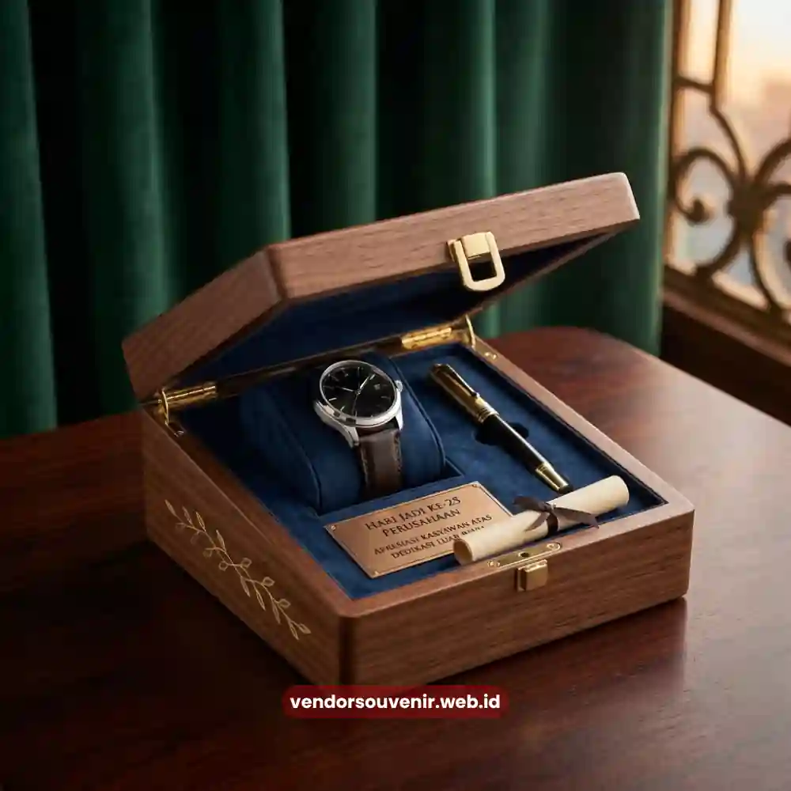
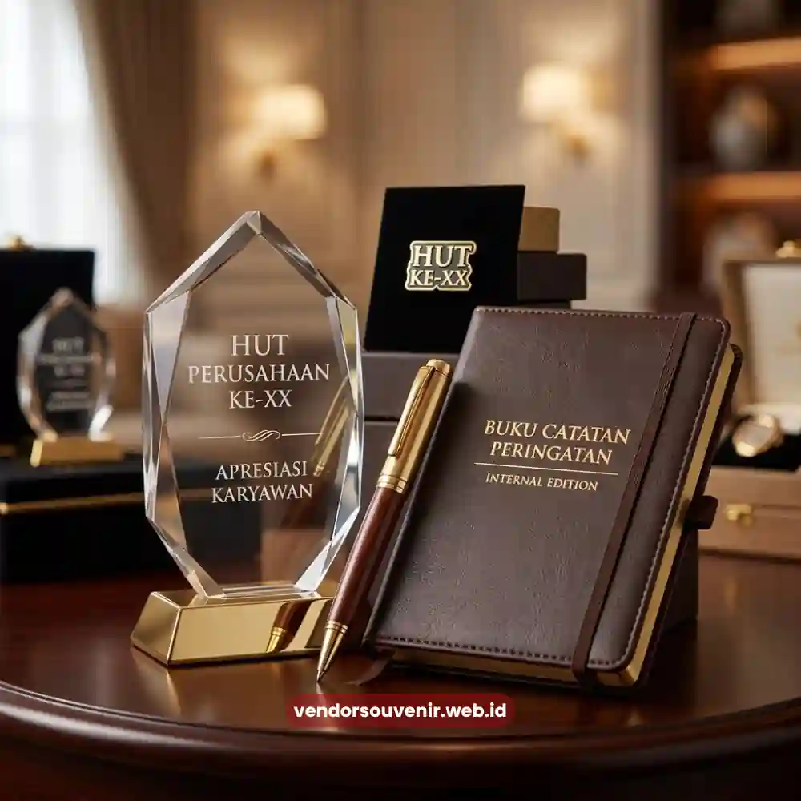

Daftar Isi
Souvenir ulang tahun perusahaan untuk karyawan adalah bentuk penghargaan internal yang diberikan pada momen hari jadi perusahaan. Tujuannya adalah untuk meningkatkan rasa memiliki dan loyalitas tim.
Pemberian souvenir ini biasanya dilakukan serentak kepada seluruh karyawan. Mereka diberikan souvenir dengan desain seragam bertema anniversary perusahaan.
Vendor Souvenir menyediakan berbagai pilihan produk yang dapat diproduksi massal. Keunggulannya adalah proses ini dapat dilakukan tanpa mengurangi kesan eksklusif bagi setiap penerima.
- Souvenir karyawan memperkuat budaya kerja dan rasa bangga terhadap perusahaan.
- Desain seragam bertema anniversary menciptakan kekompakan tim.
- Produk fungsional harian menjadi pilihan paling efisien untuk jumlah besar.
- Kualitas produk tetap harus diperhatikan meski diproduksi massal.
- Vendor Souvenir siap memenuhi kebutuhan produksi dalam skala besar dengan waktu terukur.
Mengapa Souvenir Penting dalam Perayaan Ulang Tahun Perusahaan bagi Karyawan?
Souvenir memiliki peran penting dalam perayaan ulang tahun perusahaan. Souvenir menjadi simbol nyata dari apresiasi yang diberikan manajemen kepada seluruh tim yang ada.
Berbeda dengan komunikasi verbal seperti ucapan terima kasih dalam rapat. Souvenir memberikan pengalaman fisik yang dapat disimpan dan digunakan dalam jangka waktu panjang oleh karyawan.
Dari sisi psikologi organisasi, pemberian souvenir pada momen seremonial ini sangat penting. Langkah ini turut membangun ikatan emosional antara karyawan dengan pihak perusahaan.
Karyawan yang merasa dihargai cenderung menunjukkan tingkat engagement yang lebih baik. Serta produktivitas yang meningkat dalam aktivitas kerja mereka sehari-hari.
Selain itu, souvenir bertema anniversary juga berfungsi sebagai media dokumentasi sejarah perusahaan.
Setiap kali karyawan menggunakan produk tersebut, mereka secara tidak langsung mengingat perjalanan perusahaan. Mereka akan bangga dengan pencapaian yang telah diraih hingga mencapai usia tertentu.
Jenis Souvenir Apa yang Paling Sesuai untuk Karyawan?
Jenis souvenir yang paling sesuai untuk karyawan adalah produk fungsional yang praktis. Produk ini dapat digunakan dalam aktivitas kerja maupun di kehidupan sehari-hari mereka.
Contohnya seperti tumbler, tas ransel, jaket, atau perlengkapan meja kerja. Semuanya didesain menarik dengan tema anniversary perusahaan yang elegan.
Produk fungsional sering dipilih karena tingkat pemakaiannya tinggi. Sehingga secara langsung nilai brand recall juga akan meningkat bagi penggunanya.
Selain produk fungsional, banyak perusahaan turut menambahkan elemen seremonial lain. Seperti menyertakan pin logam edisi khusus atau kartu ucapan personal dari manajemen.
Kombinasi antara produk fungsional dan elemen seremonial menciptakan kesan mendalam. Souvenir tersebut bukan sekadar barang, melainkan bagian dari momentum penting perusahaan.

Merchandise Spesial untuk HUT Perusahaan
Bagaimana Menyesuaikan Souvenir dengan Berbagai Divisi Karyawan?
Penyesuaian souvenir dengan berbagai divisi karyawan dilakukan dengan cara saksama. Pemilihan ini harus mempertimbangkan kebutuhan kerja dari masing-masing tim.
Divisi lapangan misalnya lebih membutuhkan produk yang tahan lama dan kuat. Produk multifungsi seperti tas lapangan atau jaket sangat ideal bagi mereka.
Sementara divisi kantor cenderung lebih cocok menerima produk pendukung meja kerja. Seperti mug cantik atau organizer elegan yang membantu pekerjaan.
Meskipun terdapat penyesuaian jenis produk yang bervariasi, elemen desain tetap harus diperhatikan. Logo, warna brand, dan tema anniversary tetap harus terlihat konsisten.
Hal ini sangat penting agar identitas perusahaan tetap terjaga secara menyeluruh. Meskipun produknya berbeda, ciri khas di semua divisi tetap seragam.
Bagaimana Souvenir Memengaruhi Motivasi dan Loyalitas Karyawan?
Souvenir yang diberikan pada momen anniversary perusahaan memiliki dampak positif. Hal ini dapat memengaruhi motivasi karyawan secara langsung melalui mekanisme pengakuan sosial.
Ketika karyawan menerima produk berkualitas dengan desain eksklusif, mereka merasa dihargai. Mereka merasa menjadi bagian penting dari pencapaian yang diraih perusahaan.
Karyawan tidak merasa hanya sekadar sebagai penonton dari perayaan tersebut. Namun ikut serta merayakan kesuksesan bersama seluruh tim.
Dalam jangka panjang, konsistensi pemberian souvenir setiap tahun turut membangun tradisi positif. Tradisi internal semacam ini akan selalu dinantikan oleh para karyawan.
Tradisi ini secara tidak langsung memperkuat budaya perusahaan secara keseluruhan. Serta menciptakan pengalaman kerja yang jauh lebih positif dibandingkan perusahaan tanpa apresiasi serupa.
Bagaimana Memastikan Kualitas Souvenir Tetap Terjaga Meski Diproduksi Massal?
Kualitas souvenir tetap dapat terjaga meski diproduksi dalam jumlah besar. Kuncinya dengan memilih material yang konsisten dan proses produksi yang terstandarisasi.
Pemilihan bahan baku dari sumber tunggal serta proses quality control yang ketat di setiap tahap produksi. Hal ini menjadi kunci utama menjaga keseragaman kualitas produk jadi.
Selain aspek material, desain juga mengambil peranan penting dalam kualitas. Desain yang sederhana namun elegan cenderung lebih mudah dipertahankan konsistensinya.
Pendekatan semacam ini memungkinkan vendor melakukan produksi massal dengan minim cacat. Ini akan selalu menghasilkan produk dengan finishing yang rapi pada setiap unitnya.
Wujudkan Apresiasi Karyawan Bersama Vendor Souvenir
Vendor Souvenir memahami pentingnya momen ulang tahun perusahaan bagi semua tim. Terutama sebagai sarana strategis dalam mempererat hubungan dengan karyawan yang berdedikasi.
Kami menyediakan berbagai pilihan souvenir fungsional dan seremonial yang berkualitas tinggi. Hadir dengan personalisasi logo, warna brand, hingga tema khusus anniversary.
Produk tersebut dapat diproduksi dalam jumlah besar secara cepat dan tepat waktu. Tentu saja tanpa mengurangi kualitas setiap unitnya agar tetap memuaskan pelanggan.
Souvenir ulang tahun perusahaan untuk karyawan berperan penting untuk masa depan tim. Langkah ini efektif dalam membangun loyalitas, motivasi, dan budaya kerja yang positif.
Pemilihan produk fungsional dengan desain konsisten serta kualitas yang selalu terjaga. Menjadi pilar utama serta kunci keberhasilan dari program apresiasi internal ini.

Vendor Souvenir Siap Membantu Anda Menghasilkan Corporate Gift Terbaik
Pertanyaan yang Sering Diajukan (FAQ)
Apa manfaat souvenir bagi karyawan saat ulang tahun perusahaan?
Souvenir memberikan pengalaman apresiasi nyata yang meningkatkan rasa memiliki dan loyalitas karyawan terhadap perusahaan.
Jenis souvenir apa yang paling sering dipilih untuk karyawan?
Produk fungsional seperti tumbler, tas, dan perlengkapan kerja bertema anniversary menjadi pilihan paling umum karena tingkat pemakaiannya tinggi.
Apakah souvenir untuk karyawan bisa diproduksi dalam jumlah besar dengan kualitas tetap terjaga?
Ya, dengan pemilihan material konsisten dan proses quality control yang tepat, souvenir dapat diproduksi massal tanpa mengorbankan kualitas.
Maroon Souvenir
Partner Corporate Gift terpercaya di Indonesia. Berpengalaman melayani ratusan perusahaan sejak 2018.
Lihat Portofolio Kami